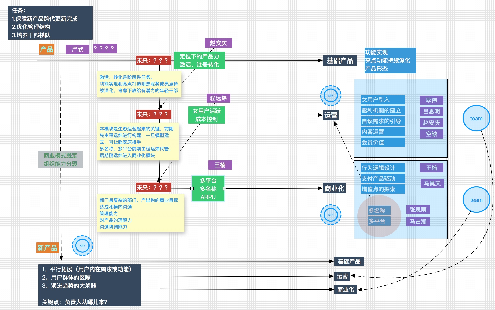
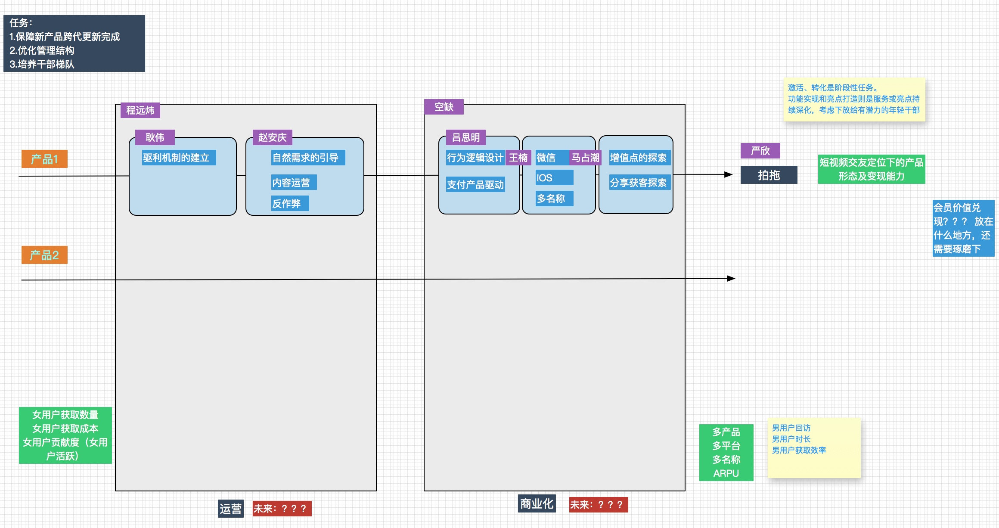

阿波罗项目进展
本周五出了『拍拖』的α版本，已经通过应用宝提交，下周正式进入内测期。
从定位和产品功能来看，基本是围绕短视频交友的定位来设计，补齐了策略的相关功能，算是一个比较完整的版本。
女用户运营能否正常转起来，是建立起交友生态的核心，在关注用户行为的同时（主要还是看留存数据，是否能提升，符合咱们队用户认知能力提升的基本假设，产品是否真的让用户爱玩），驱利种子用户将开始导入。
拍拖团队接下来主要的任务：
- 行为数据的分析验证产品升级的基本假设。
- 种子用户的导入开始启动；
- 变现能力的起点会是个什么水平。
以上几点任务主要由由严欣、远炜和王楠的配合进行。
多平台化
上周和徐威进行了沟通，徐威对承接拍拖微信端的事情表示认可，并在商务三部进行了讨论。我带着严欣、程远炜和马占潮也进行了两轮沟通，初步确定的意向是让马占潮来担任微信版本的一线经理，让马占潮给出执行方案，在公司内部寻找资源。我是期望马占潮自身能找到合适的一线经理来执行这个项目，占潮尝试一线经理的管理，下周一会进行讨论确定。
业务规划
上周主要精力放在中期业务规划上，对于产品部设计了两套方案：
方案A：

方案B：

从人才培养和获取来看，第二种架构的设计具有更好的包容性，坑会比较多，而且故事也能讲的很大。上周同田洁也聊了一次，貌似他面临和我同样的问题。
几个问题需要考虑：
1. 如何给目前还不错的同事创造环境，考察其管理能力；
2. 如何就目前员工中预期失位的同事进行引导，给予正确的预期路径；
3. 对引进的人才建立能力模型，从哪些方面考察，进入体系后如何考察培养。
下周想同田洁、董总一起过一下这个方案，一并对需要培养和获取的干部进行一下盘点。